Every picture is drawn straight from GrappleMap.txt (public domain): two figures, side view,
orthographic, red and blue, limbs as round-capped strokes. A move plays as its frames (CSS stepped); a position is one
still. Card text and numbers come from proto/cardgame/cards.mjs; ids are GrappleMap's own record order.
8 of 8 cards in the BJJ deck have a picture
(6 of 6
BJJ cards, 2 of 2
shared core cards). Source: GrappleMap
GrappleMap.txt at commit 032c8f91, 601 positions,
1485 transitions, 7722 transition frames,
161 tags. All authors involved in the creation of the contents of this package have agreed to release their respective contributions into the Public Domain.

Sprawl · ans · 1 wind · from hL
GrappleMap 983 "sprawl to head&arm" · 3 frames · topEscape · ans · 1 wind · from h
GrappleMap 632 "stand up escape" · 6 frames · bottomSweep · shot · 2 wind · from B0/B1
GrappleMap 894 "hip bump sweep" · 5 frames · bottom
Guard pass · adv · 1 wind · from T0/T1/T2
GrappleMap 752 "bull fighter pass" · 5 frames · top, detailedTriangle · hold · 2 wind · from B0
GrappleMap 704 "triangle" · 8 frames · bottomArmbar · hold · 3 wind · from B0/T2/T3
GrappleMap 1458 "arm bar" · 6 frames · bottom
Rear choke · hold · 3 wind · from T3
GrappleMap 716 "rear naked choke" · 5 frames · top
Kimura · hold · 3 wind · from B1/T1/T2
GrappleMap 1786 "kimura" · 9 frames · no top/bottom tag| id | name | tags |
|---|---|---|
| 96 | low double leg | double_leg_takedown standing |
| 110 | posture broken full guard | full_guard closed_guard top_kneeling bottom_supine top_posture_broken collar_tie |
| 185 | standing vs supine w/ legs extended | standing bottom_supine |
| 198 | rear naked choke w/ arm trapped | back rear_naked_choke |
| 224 | back w/ arm trapped | back |
| 227 | full guard kimura threat | full_guard kimura top_kneeling bottom_seated |
| 236 | chest pass | pass_around top_kneeling leg_smash passing |
| 263 | arm lock | armbar bottom_supine |
| 288 | sprawl vs turtle w/ single | turtle single_leg_takedown sprawl |
| 368 | sprawl w/ head&arm vs double-leg | double_leg_takedown sprawl turtle |
| 440 | bull fighter pass | standing bottom_supine pass_around |
| 499 | half guard kimura | half_guard bottom_supine kimura |
Made by node proto/grapplemap/slice.mjs from the fetched
GrappleMap.txt (never committed, 2.55 MB); the slice itself is
bjj_slice.json, its verbatim source text bjj_slice.gm.txt.